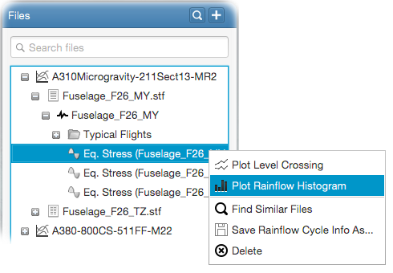
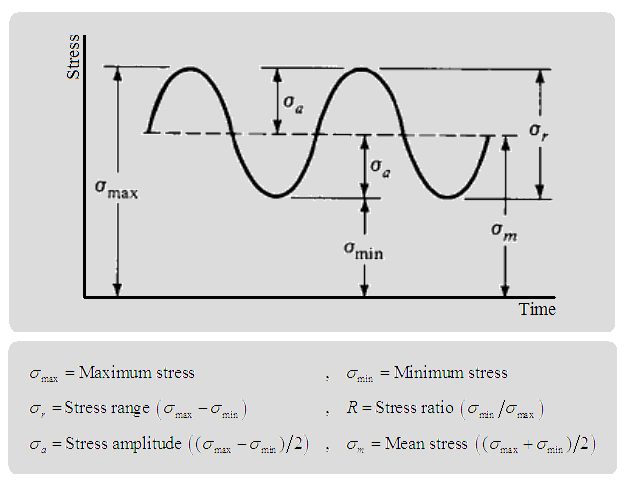

Rainflow cycle counts can be plotted as rainflow histograms. Following video demonstrates how to do this.
For this, right-click on an - Equivalent Stress
item and select
- Plot Rainflow Histogram
from the popup menu to open the plot input panel.

By default, mean stress histogram will be automatically plotted as
the plot input panel shows up.
Various histogram data can be plotted against number of cycles. The following figure shows how the data values are
computed.